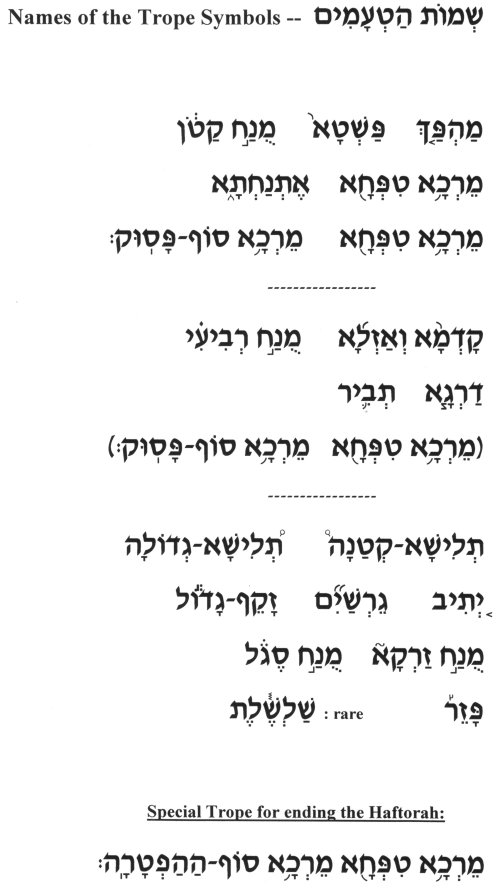

Trop Demo
Here is a basic demo of the Trope (cantillation marks) used on Haftorah Audio:
There are several variations of trope used in different synagogues, and no trop is more "correct" than the others.
On Haftorah Audio we have chosen a fairly common system of trop that is standard in many communities.
** While it can be tempting to start learning your Haftorah by trying to memorize the melody of the entire text, it is MUCH better and
easier in the long run to take the time to learn the actual trop first. Then you will be able to apply the trop to your haftorah text and be able to
chant any haftarah in the future.
--> Online Haftorah and Trope Tutoring also available here.
Click to Play
Trop Demo Audio 
---> Right-click the above link and choose "Save Link As..."
to save this audio file to your computer.

Contact us for more info >

|


|